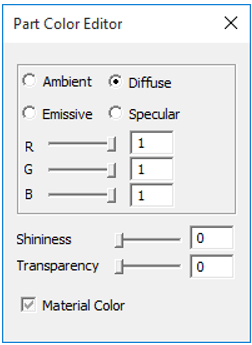
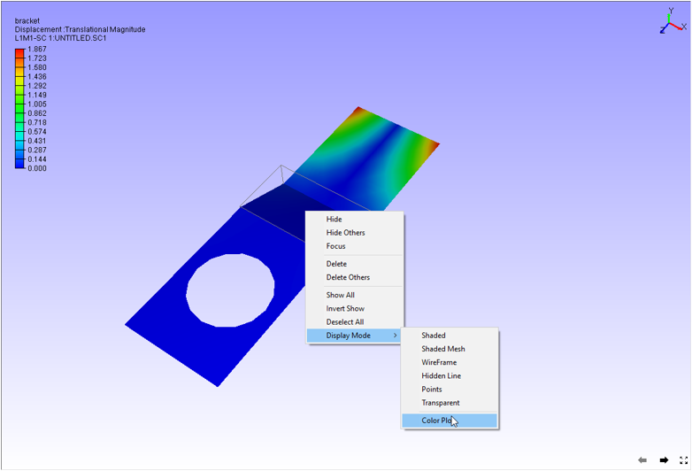
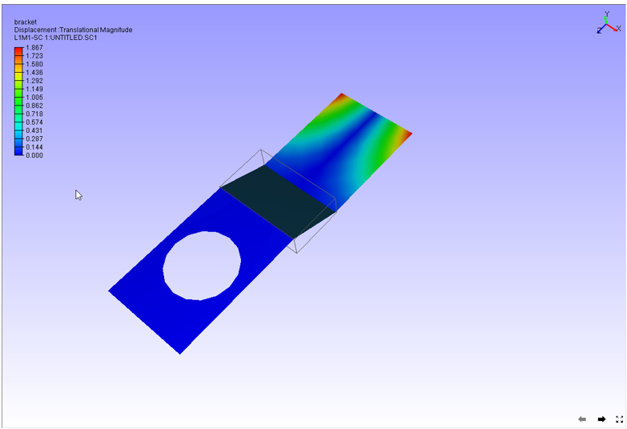
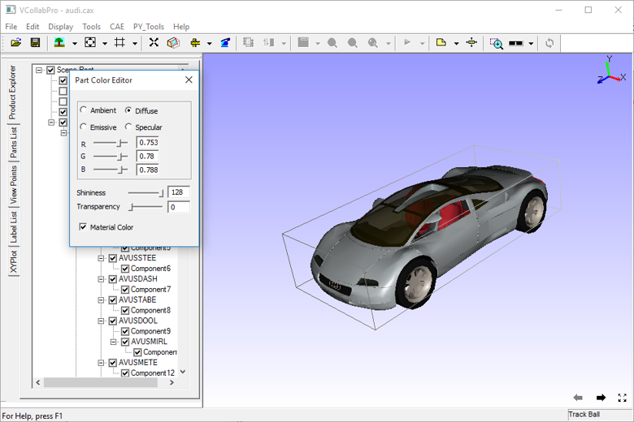
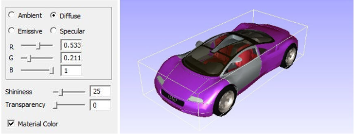
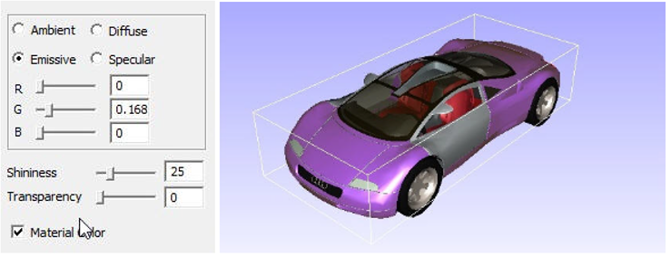
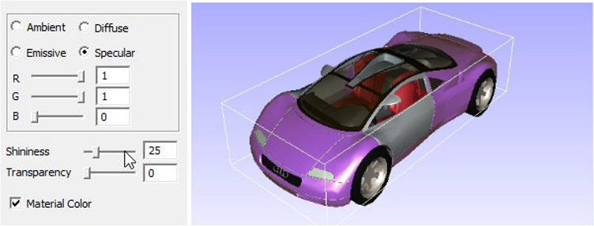
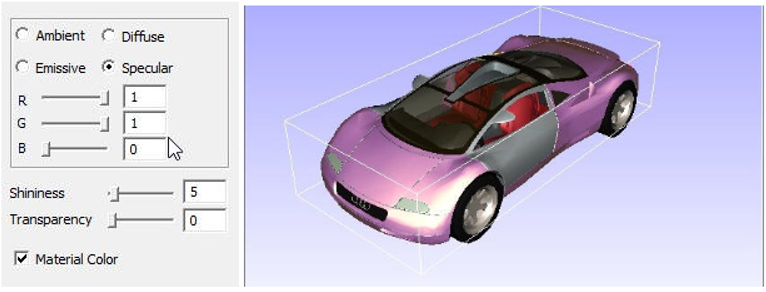

Part Color
Users can edit material color of the part(s) selected using the Part Color option under the Edit menu.
Part Color Editor Panel

The following properties can be modified. All property values vary in the range of 0 to 1 except shininess.
| Ambient | Specifies the amount of light a surface should reflect. To change the property against ambience, users need to select the same and reset the values using the RGB slider |
| Diffuse | Specifies the amount of light the surface reflects depending on the angle of the surface with respect to the light source. To change the property against diffuse, users need to select the same and reset the values using the RGB slider |
| Emissive | Specifies the amount of light produced by a glowing object. To change the property against emissive, user need to select the same and reset the values using the RGB slider |
| Specular | Specifies the color for highlighting an object. To change the property against Specular, user need to select the same and reset the values using the RGB slider |
| Shininess | Specifies the degree of the surface shine with values ranging from 0 to 128. If the value is set to 0 the surface is without shine and if it’s set to 128, the surface is polished. |
| Transparency | Specifies the transparency of the object. If the value is set to 0, the surface is opaque and when set to 1, the surface is transparent. |
| Material Color | Check this material color box to apply default material color on the selected parts. |
Steps to apply or remove material color
Double click on a part of a model to open up a context menu

Click Display Mode | Color Plot.
It applies or removes material color.

Steps to change part material color
Load a CAX model.
Select a part by double clicking on the part which highlights the part with its bounding box.
Click Edit | Part Color as shown below

Check Material color checkbox to remove and apply material color.
Change the Ambient color using slider controls and note the change concurrently.

Select the Diffuse option and change the color using slider controls as shown below.

Select Emissive option and change the color using slider controls as shown below.

Select the Specular option and change the color using slider controls as shown below.

Change the Shininess as using the shininess slider control as shown below.
